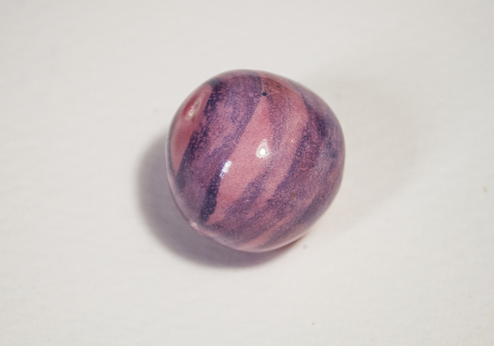

Utilizo el estudio de la historia de las matemáticas como fuente de
inspiración para crear esculturas donde el azar y la casualidad tiene
un papel activo en el resultado final de la obra. Éstas
esculturas buscan la estética pero sin embargo suponen a nivel perso-
nal, un desahogo, una reflexión sobre el orden y el caos que se traduce
en una propia lucha personal.
También reflexiono durante la creación
sobre la importancia del material, quiero que mis obras sean una etapa
más en la vida en constante evolución de la tierra, no la huella de un
individuo independiente.
